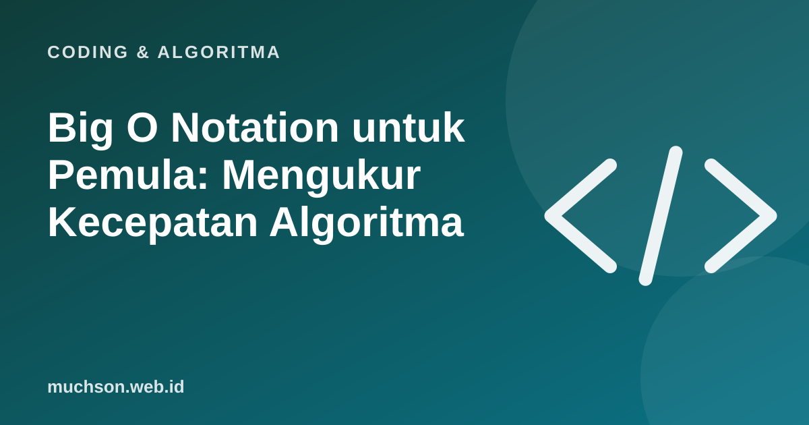

Beranda › Artikel › Coding & Algoritma
Coding & AlgoritmaBig O Notation untuk Pemula: Mengukur Kecepatan Algoritma
Dua program yang sama-sama benar bisa sangat berbeda kecepatannya saat datanya membesar. Big O adalah bahasa untuk membicarakan perbedaan itu tanpa harus mengukur dengan stopwatch di komputer tertentu.

Yang diukur: pertumbuhan, bukan detik
Big O tidak menyebut berapa detik, tetapi bagaimana jumlah langkah tumbuh ketika jumlah data (n) membesar. Jika data digandakan, apakah pekerjaan tetap, ikut dua kali lipat, atau menjadi empat kali? Itulah yang dijawab.
Kelas-kelas yang paling sering ditemui
| Notasi | Nama | Contoh |
|---|---|---|
| O(1) | Konstan | Mengambil elemen list dengan indeks |
| O(log n) | Logaritmik | Binary search |
| O(n) | Linear | Mencari di list yang tidak terurut |
| O(n log n) | Linearitmik | Pengurutan efisien (merge sort) |
| O(n²) | Kuadrat | Dua perulangan bersarang, bubble sort |
| O(2ⁿ) | Eksponensial | Rekursi naif seperti Fibonacci tanpa penyimpanan hasil |
Cara membaca kode
Big O menyederhanakan: konstanta dan suku kecil diabaikan. 3n + 10 tetap disebut O(n). Itu karena ketika n sangat besar, suku dominanlah yang menentukan.
Kapan Big O penting?
Pada data kecil, hampir semua algoritma terasa cepat. Big O menjadi penting ketika data tumbuh: puluhan ribu pengguna, jutaan baris, atau perhitungan yang dijalankan berulang. Pada saat itu, memilih O(n log n) daripada O(n²) bisa berarti selisih detik dan jam.